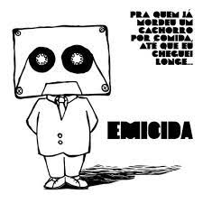
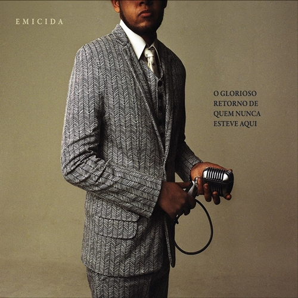

Leandro Roque de Oliveira (São Paulo, 17 de agosto de 1985), mais conhecido pelo nome artístico Emicida, é um rapper, cantor,
compositor e apresentador brasileiro. É considerado uma das maiores revelações do hip hop do Brasil da década de 2000.
Hoje iremos conhecer mais sobre sua discografia.
5- Emicídio (2010)
Lançado em 2010, a mixtape reúne 18 novas faixas que passam pelos mais diversos assuntos acerca da vida
do rapper.
Tendo como destaques as canções "Rua Augusta" e "Eu Gosto Dela", é um álbum com grande inspiração na época
de batalhas de rima de sua vida.
Longe de ser um projeto ruim, mas em comparação aos próximos, esse fica um pouco abaixo.
4- Pra quem já mordeu um cachorro por comida, até que eu cheguei longe... (2009)

O maior dessa lista, com um total de 25 faixas, "Pra quem já mordeu um cachorro por comida, até que eu cheguei longe",
é um dos álbuns mais importantes dos anos 2000, vendendo incríveis 10 mil cópias físicas, na época em que
a mídia física começava a cair em desuso.
Emicida aborda questões debatidas a oito anos atrás que hoje são muito atuais
em nosso cotidiano como o racismo, a violência e influência da internet na sociedade.
3- Sobre Crianças, Quadris, Pesadelos e Lições de Casa... (2015)
Abrindo o pódio, "Sobre Crianças, Quadris, Pesadelos e Lições de Casa..." é o segundo álbum de estúdio do rapper,
lançado em 7 de agosto de 2015, foi indicado ao Grammy latino em 2016 na categoria de Melhor Álbum de Música Urbana.
No geral, "Sobre Crianças, Quadris, Pesadelos e Lições de Casa..." é um álbum impressionante, feito inspirado em uma viagem feita para o
continente africano, é um álbum mais com algumas faixas mais romanticâs, como a famosa "Passarinhos".
Indispensável e essencial para os fãs de música brasileira.
2- AmarElo (2019)
Talvez o álbum mais popular do artista, é o álbum mais diferente da sua discografia, puxando muito mais para o lado
do samba e do MPB, é um álbum muito consistente que virou até documetário na Netflix.
Com faixas incríveis como "A Ordem Natural das Coisas" e "Pequenas Alegrias da Vida Adulta", é um projeto mais intimista
e com fortes referências ao passado da música brasileira.
1- O Glorioso Retorno de Quem Nunca Esteve Aqui (2013)

O primeiro álbum de estúdio do Emicida, e não poderia começar melhor.
O álbum mais profundo do cantor, falando muito sobre seu passado e traumas familiares, Emicida nos traz um álbum com
participações incríveis, com destaque para a Pitty na faixa "Hoje Cedo", e muita inspiração na cultura do país, tendo faixas de
todos os genêros mais populares no Brasil, como funk em um feat com MC Guime, samba na música "Hino Vira-Lata", e claro, rap,
mas com destaque na faixa "Levanta e Anda" com participação do Rael.